espesificacion de documento

Análisis, diseño, desarrollo e implementación de un aplicativo web para Sistematizar la información y control de las ventas de la microempresa Dulcería parque
PRESENTADO POR:
María Castillo|| Cristian Gonzales|| Ronnie Rodríguez|| Luis escoria
Historial de Revisión
| fecha | version | descripcion | autor |
|---|---|---|---|
| 23/09/2021 | 1.0 | primera vercion | °maria castillo °ronnie rodriguez °crian gonzales °luis escorcia |
espesificacion de docuemnto
introduccion
El propósito del srs (especificación de requerimientos de software) se centra en la recopilación y la organización de todos los requisitos que envuelven el proyecto. Si dispone de un plan de gestión de requisitos, debe consultarlo para determinar la organización y la ubicación correcta de los requisitos
Propósito
El propósito del (SRS) es dejar documentado los acuerdos establecidos a los que se quiere llegar entre el cliente y nuestro equipo de desarrollo. Se requiere verificar el cumplimiento de la calidad del sistema de información.
Alcance
El alcance de nuestro proyecto tiene como finalidad la elaboración de un sistema de información de tipo web el cual se realizara para el control de las ventas, manejo de inventario, control de los clientes, promocionar los productos de la microempresa Dulcería Parque. Este sistema va a contener un módulo de ventas, módulo de inventario y modulo servicio-cliente
Alcance
SRS: (Especificación de Requerimientos de Software) es una descripción completa del comportamiento del sistema que se va a desarrollar. Incluye un conjunto de casos de uso que describe todas las interacciones que tendrán los usuarios con el software. SOFTWARE: Conjunto de programas y actividades que permiten a la computadora realizar tareas determinadas. PRODUCTO: Es una unidad lógica de compartición y empaquetado de software que tiene un desarrollo gestionado en un ciclo de la vida y del mantenimiento y atributo visible para el cliente. Puede ser una colección del componente producto de software cuya licencia puede depender de la licencia de la oferta total. PROVEEDOR: Un proveedor del servicio de aplicación o ASP (del inglés application servicer provider).En una empresa que ofrece del servicio de computación a su cliente a través de una red en el software ofertando mediante un modelo ASP es conocido también como software o demanda software como servicio (saaas). INVENTARIO: Es un programa informático creado para ayudar y facilitar la gestión del inventario de una empresa para ellos el programa requiere una cuenta para entrada y salida de los productos que se producen en las distintas instalaciones, puntos de ventas, etc. USUARIOS: Es utilizado generalmente en el campo de la tecnología informática para referirse a quien utiliza determinado hardware y software mediante el cual obtiene un servicio. ATENCION AL CLIENTE: Un software para atención al cliente es una solución que proporciona herramienta para la comunicación con el cliente y prospecto, recoge y almacena los datos del target incluida a la interacción con el mismo.
Referencias
https://es.wikipedia.org/wiki/Especificaci%C3%B3n_de_requisitos_de_software#:~:text=La%20especificaci%C3%B3n%20de%20requisitos%20de,son%20conocidos%20como%20requisitos%20funcionales.
https://es.wikipedia.org/wiki/Software
https://www.bitrix24.es/uses/software-para-atencion-al-cliente.php#:~:text=Qu%C3%A9%20es%20un%20software%20para,las%20interacciones%20con%20el%20mismo.
https://www.ecured.cu/Usuario_(Inform%C3%A1tica)
https://cs.uns.edu.ar/~ags/publications/talks/SaaP%20vs.%20SaaS.pdf
https://www.mecalux.es/blog/software-de-inventario
https://es.wikipedia.org/wiki/Proveedor_de_servicios_de_aplicaci%C3%B3n
Apreciación Global
En la primera parte de este documento se presenta una introducción donde se conoce y se define que finalidad tiene el documento del srs, conocemos la definición y el propósito y alcance del proyecto. Definiciones y referencias. En la segunda parte hablaremos sobre las funciones del producto y las características de los usuarios y restricciones. En la tercera parte vamos a clasificar los requerimientos en funcionales y no funcionales y a describir sus funciones y descripciones.
Descripción General
Perspectivas del Producto
Se proyecta implementar un sistema de información que permita controlar las ganancias de las ventas, además que permita registrar todos los recorridos realizados por las unidades durante el día. El sistema de información a implementarse es un software independiente, ya que no tendrá relación con otros sistemas
Funciones del Producto
El insumo requerido para el proyecto, comprende las siguientes funciones: Selección del proveedor La orden de compra Emisión de la orden de compra Control de calidad Planificación de compras Productos catalogados y no catalogados Permite realizar reportes Permite registrar los productos de la empresa Permite registrar a sus clientes Permitir realizar pedidos
Características de Usuario
Los usuarios que manejarán el sistema de información son: Empleados y trabajadores de la Dulcería el Parque
| usuario | caracteristicas |
|---|---|
| Administrador | Tiene acceso a todas las funciones del sistema del software |
| trabajador | Solo tiene información sobre los pedidos que entran y salen de la microempresa y procesarlos |
| cliente | Solo tiene información sobre los actuales y nuevos productos que venderá la microempresa. |
Restricciones
El acceso al sistema de control de ventas está concebido únicamente para los usuarios que participan dentro del proyecto y este a su vez está dividido según sus funcionalidades de registrar, evaluar aprobar y finiquitar, de manera tal que el usuario que evalúa no tiene permiso para navegar en las otras funcionalidades
No le permite al usuario realizar la inclusión de nueva información, debe existir previa manifestación a todos los encargados del proyecto y ala alta gerencia, y este procedimiento sería realizado directamente en la gerencia de sistemas luego de un permiso para modificar la base de datos
Atención y Dependencias
Este sistema de información tendrá impacto en el área administrativa del negocio ya que cambiara la forma de vender los productos y servicios que ofrece la microempresa, también hará un cambio en el control o manejo de las ventas realizadas por el trabajador y la manera como se le ofrecerán los servicios al cliente mostrándole las promociones e información de los productos y precios. También habrá un área de publicidad donde se dará a conocer como una microempresa en proceso de crecimiento
Requerimientos Específicos
Requerimientos Funcionales
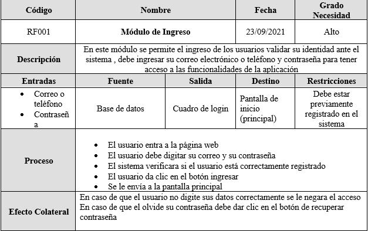

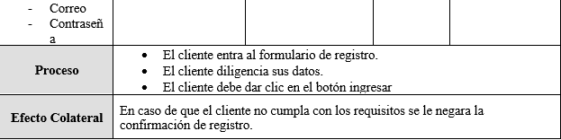


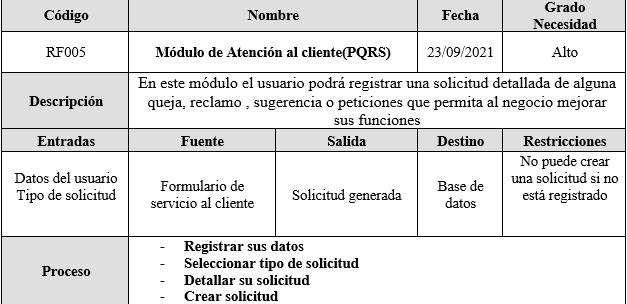
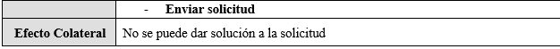
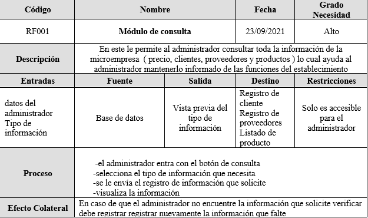
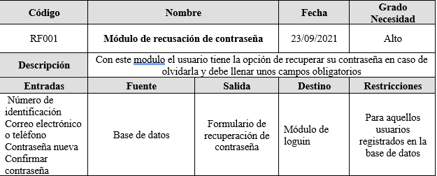
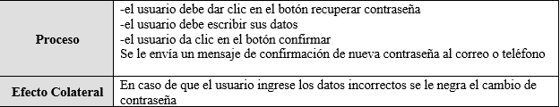
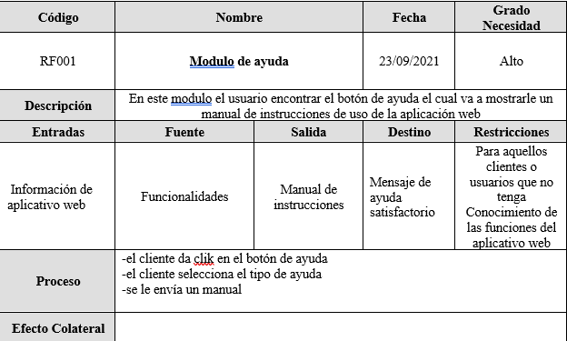
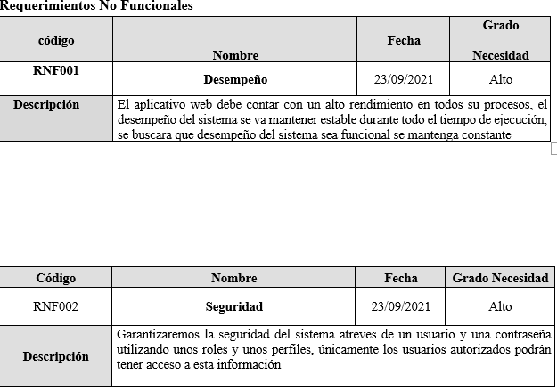
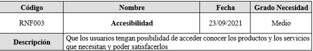
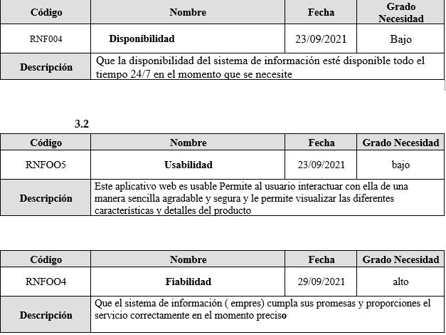
requerimiento interfaz de usuario
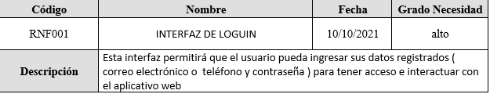

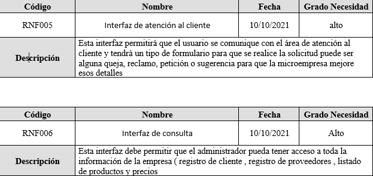